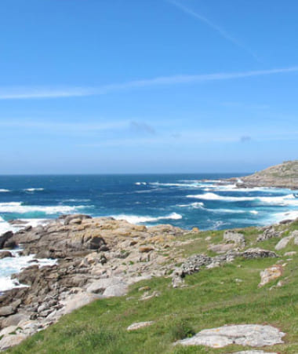
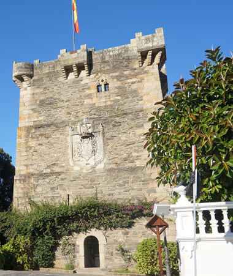
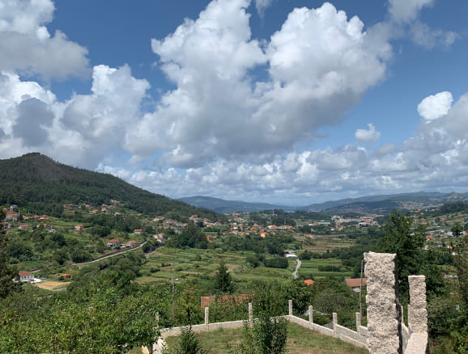

不同的路線，不同的決定，決定了不同的相遇。


BUEN CAMINO

Camino del Norte
北方之路是沿著西班牙北部海岸的一條路線，
從Basque出發,穿越Cantabria、Asturias、
Galicia,到Santiago de Compostela。
雖然上坡路較多，但擁有大自然美景的山與海
、美食，就是這條路最吸引人的特色，孤獨與
寧靜的絕美。

Camino Frances
法國之路是所有路線最受歡迎最著名的,擁有
驚嘆的城市和自然美景,穿越Pamplona、
Logroño及Leon、O Cebreiro、Sarria。
大多數朝聖者是從Sarria開始,主要因為領取
朝聖護照最少走最後一百公里。此路線沿途的
指標、箭頭、餐廳酒吧和住宿點也是最多的。

Camino Finisterre
世界盡頭之路,Santiago de
Compostela不是旅程的終點,
而是新旅程的開始。途中會
遇到兩條不同方向的叉路,
一條直接通往 Finisterre
,另一條則先通往另一座海
邊小鎮 Muxía。

Camino Ingles
兩個起點:Ferrol和A Coruna
是北歐、英國和愛爾蘭的朝
者的傳統路線,也是一條重要
的貿易路線。A Coruna是一
個比Ferrol更大的小鎮,只有
少數朝聖者從那裡出發,因為
它距離聖地亞哥德孔波斯特
拉不到100 公里。

Via da la Plata
是所有路線最長的,從南到北
遊覽半島,經西班牙一些最
美麗的地方。Seville,Zafra,
Merida,Caceres,Salamanca,
Zamora,Astorga等城市都是
您在這條美妙道路上發現的
一些地方。

Camino Portugues
葡萄牙之路是第二受歡迎的路線，擁有大西
洋美景和沙灘，能品嚐美味海鮮和葡萄酒。
雖然葡萄牙之路的起點都在葡萄牙首都
Lisboa,大多朝聖者從第二大城市Porto
或Tui開始他們的旅程,因為從Lisboa
到Porto的路幾乎都是難走的石頭路,線設
施較少,路標也不是很好。
Camino Le Puy
Le Puy Route是法國最受歡迎的朝聖路線。
它從 Le Puy-en-Velay 鎮的里昂附近開始
，直到 Saint-Jean-Pied-de-Port。
這是一條相當多山的路線，經常起伏不定。
大自然風景優美，一年中走這條路線的最佳
時間是夏天，但那時是最繁忙的時候，有時
可能很難找到住宿。